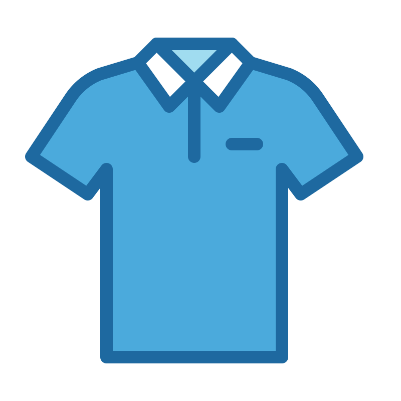

Escola Ramon Pont
Registre de l'ús del polo
Toca un curs per carregar la llista d'alumnes.
Vols revisar dades i patrons? Entra a l'espai de consultes.
Consultes
Tria quin resum vols consultar.
Consulta seleccionada
Selecciona una opció per veure el resum.
Encara no has triat cap consulta.
Aquí veurem resums clars per a tutors i professorat.